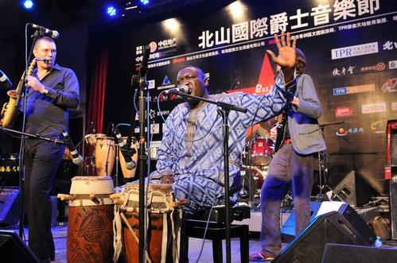

第四届北山国际爵士音乐节将于9月27、28日正式在北山戏院奏响。“北山音乐节”是在珠海市政府的支持下创办的文化创意品牌项目，该项目于2010年创办以来，已成功打造“北山国际爵士音乐节”及“北山世界音乐节”两大各具特色的音乐节品牌。
第四届北山国际爵士音乐节的主题是“给梦想来点音乐”，“音乐”与“梦想”的概念将贯穿音乐节的每一个环节。
第一，本次音乐节将更加关注年轻人——首次将“北山·校园音乐之旅”系列活动从珠海市各高校延伸至中小学，在教育的层面增强年轻人对音乐和梦想的认知和了解，到5所学校进行校园文化之旅，从而影响更多年轻人，并帮助他们实现音乐梦想。
第二，本次音乐节将更加关注音乐本身——每晚安排两支乐队以音乐工作坊形式与现场观众进行零距离的交流互动，这是北山音乐节首次把音乐工作坊作为分舞台同步在会场内进行。分别是以色列鼓王Asaf Sirkis的“地球村节奏效应”、瑞士长号手Samuel Blaser“从古典到前卫——长号的前世今生”、香港爵士乐团maRK的“香港遇上非洲——魔幻转驳站”以及巴西吉他狮王Diego的“巴西吉他的森巴旅程”。
第三，本次音乐节将走更加国际化的路线——邀请来自十个国家九支乐队三十余位顶级乐手共同打造爵士音乐盛宴，还代表中国与日本、韩国、印度尼西亚、泰国、马来西亚等国家结成亚洲爵士音乐节联盟，分别与欧洲各国使馆围绕音乐开展深度文化交流。9月27、28日，北山音乐节将首次与法国驻广州领事馆进行跨界合作，在音乐节会场内同时举办《爵对边缘》法国艺术家Criss Cusson油画作品展。在音乐的熏陶下欣赏艺术，从艺术的角度审视梦想，给梦想来点音乐！
 牛牛音乐
牛牛音乐